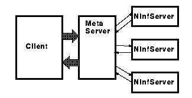

 <center> <H1>  メタサーバの役割  </H1> </center> <hr noshade width = 80% algn = "center"> <H2>

 <H1>  単純なサーバ・クライアントモデルの限界 </H1>

<LI> 計算に対応するNinf サーバの位置をユーザが知らなければならない<p>
<LI> 複数のNinf サーバを切替えなければならない<p>
<LI> 並列計算が行なえない

 <H1>  メタサーバ </H1>

<LI> サーバとクライアントの間に入り、サーバをクライアントから隠蔽する<p>
<LI> 計算を適切なサーバにディスパッチする。<p>
<LI> 複数のサーバへディスパッチすることで並列計算を実現する。<p>

 <hr> <center><table><td><h2>　　　　　　　　　　　　　　　</td><td></td><td></td><td><h2><em>　　　　　　　HOKKE' 96 </td></table></center>

